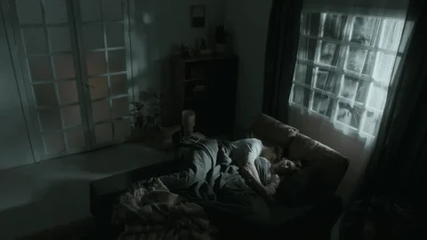

HISTORIAS DE TERROR
Explora relatos reales y ficticios enviados por nuestros lectores...

Amanecí con la Cara Limpia
Cada noche despertaba con más marcas en la cara, como si alguien me hubiera limpiado mientras dormía. Hasta que un día descubrí que las huellas no eran de manos humanas.
[Leer Más]
El Último Sonido del Pasillo 7
En el hospital donde trabajaba, cada madrugada se oía un sonido metálico en un pasillo clausurado hace años. Cuando por fin descubrimos lo que movía el carro abandonado, ya no pudimos dejar de escucharlo.
[Leer Más]
El Niño del Ventilador
Daniela escuchaba un golpeteo suave cada noche, proveniente del ventilador del techo. Hasta que una madrugada vio una mano infantil agitar las aspas desde adentro.
[Leer Más]